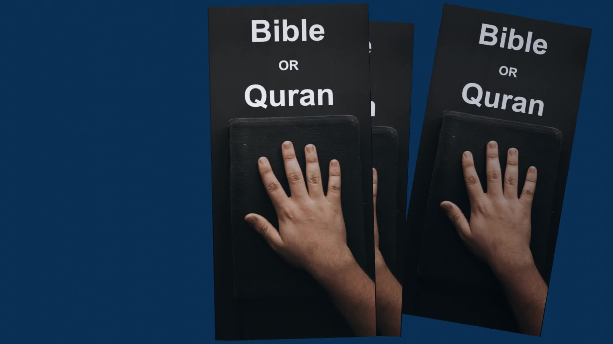

The Quran confirms the Bible is accurate
More discussion on the preservation of the Bible
Muslim leaders are lying about what Allah said.
Additional Resources
Bible unchanged from 6th Century
Comprehensive refutation from the Quran of Bible changes
Is the original Bible still in existence?